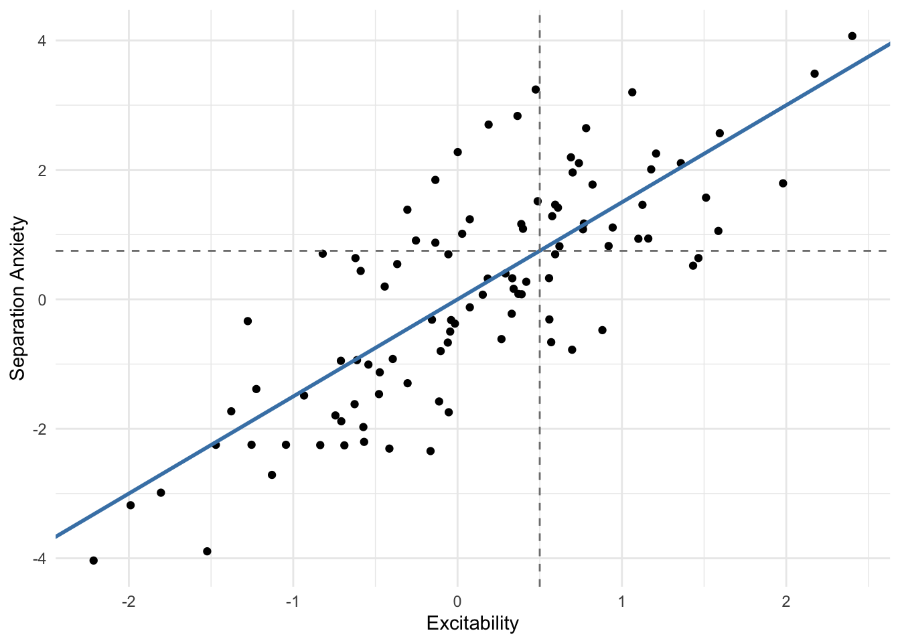

What is a prediction interval? How would you use one?
Published
March 31, 2025
What is a prediction interval?
A \(100(1-\alpha)\%\) prediction interval is an interval for a future observation of a random variable \(Y\), conditioned on the observed data \(X\), and can be defined as
\[
P(l \leq Y = y_0 \leq u | X = x_0) = 1 - \alpha.
\]
In other words, a prediction interval is an interval that allows you to make statements like
If we were to observe a new value \(X = x_0\), then there’s a \(95\%\) chance that the corresponding \(Y\) value, \(y_0\), will be between \(l\) and \(u\).
This seems like a pretty useful concept to me? It’s a powerful thing to quantify the uncertainty around a future observation. For example, you might want to predict the likely range of effects of medicine on a specific individual given a set of patient characteristics, or you might want to forecast likely levels of user engagement for a new user of your product.
Note that a prediction interval is not the same thing as a confidence interval. I won’t go over the difference here, but you can read about confidence intervals in my previous blog post, or elsewhere on the internet. You can also check out this excellent post by Rob Hyndman where he discusses the differences.
Predicting canine separation anxiety
In this post, we’ll pretend we’re looking to adopt a dog. One thing that’s important to anticipate is how much separation anxiety a newly adopted dog might experience. Prediction intervals can help us accomplish this.
Let’s say that we know that a particular measure of canine excitability (\(X\)) is related to a canine measure of anxiety separation (\(Y\)) through the following relationship
\[
Y | X = x_i \sim \mathcal{N}\left(\beta_1 x_i , \; \sigma^2\right),
\]
where \(\beta_1 = 1.5\), and \(\sigma^2 = 1.2\). Let’s simulate data from this scenario and visualize it.
Code
library(ggplot2)library(glue)set.seed(1)theme_set(theme_minimal())b1 <-1.5sigma2 <-1.2n <-100x <-rnorm(n)y <-rnorm(n, mean = b1 * x, sd =sqrt(sigma2))canine_behavior_df <-data.frame(excitability = x, sepanx = y)ggplot(canine_behavior_df, aes(x, y)) +geom_point() +geom_abline(intercept =0, slope = b1, col ="steelblue", lwd =1) +geom_vline(xintercept =0.5, lty ="dashed", col ="gray50") +geom_hline(yintercept = b1 *0.5, lty ="dashed", col ="gray50") +labs(x ="Excitability", y ="Separation Anxiety")

Let’s also say that we know that the dogs at our local shelter often have excitability scores of \(x_0 = 0.5\). What would be our best guess for a dog’s separation anxiety score if they indeed had this excitability score? How could we come up with a range of plausible separation anxiety scores for such dogs?
In this fictitious scenario, we know the true parameter values, and we therefore know that the distribution of separation anxiety scores for dogs with excitability scores of \(0.5\) is \(\mathcal{N}\left(0.75 = 1.5(0.5), 1.2\right)\).
Our best guess for our potential future dog’s separation anxiety would therefore be \(\hat{y} = 0.75\) – the mean of conditional separation anxiety distribution, and where the dashed lines intersect the blue line in the plot above.
However, there’s variability in separation anxiety for dogs with excitability scores of \(0.5\); this variability is captured by \(\sigma^2\). To get a sense of the range of separation anxiety levels observable in a dog with an excitability score of \(0.5\), we could compute a \(95\%\) prediction interval by taking the \(0.025\) and \(0.975\) quantiles of the conditional separation anxiety distribution.
Code
qnorm(c(lwr =0.025, upr =0.975), mean = b1 *0.5, sd =sqrt(sigma2))
lwr upr
-1.397033 2.897033
This interval tells us that if we were to observe a dog with an excitability score of \(0.5\), there’s a \(95\%\) chance its separation anxiety score is between \(-1.4\) and \(2.9\).
Generally, we could compute a \(100(1-\alpha)\%\) prediction interval as
where \(z_\text{crit}\) corresponds to the \(1 - \alpha/2\) quantile of a standard Normal distribution.
We can visualize the \(95\%\) prediction interval along the entire range of excitability scores to get a sense of what separation anxiety scores might look like for dogs with different excitability scores.
So, if we knew the true parameter values, and we observed a dog to have an excitability score of \(0.5\), then we would expect the dog to have a separation anxiety score of about \(0.75\), but we shouldn’t be surprised to see its score be anywhere from \(-1.4\) to \(2.9\). That’s substantially more or less than our best guess.
A very important caveat is that we’ve assumed that we know the true parameter values. We never actually do know these values though! We estimate them.
Let’s now simulate a scenario in which we don’t know the true parameter values and instead estimate them by fitting a regression model to historical data. Here we will use the data we previously generated as our “historical data”.
Code
exc_sepanx_fit <-lm(sepanx ~ excitability, data = canine_behavior_df)summary(exc_sepanx_fit)
Call:
lm(formula = sepanx ~ excitability, data = canine_behavior_df)
Residuals:
Min 1Q Median 3Q Max
-2.0560 -0.6724 -0.1528 0.5909 2.5701
Coefficients:
Estimate Std. Error t value Pr(>|t|)
(Intercept) -0.04129 0.10624 -0.389 0.698
excitability 1.49884 0.11801 12.701 <2e-16 ***
---
Signif. codes: 0 '***' 0.001 '**' 0.01 '*' 0.05 '.' 0.1 ' ' 1
Residual standard error: 1.055 on 98 degrees of freedom
Multiple R-squared: 0.6221, Adjusted R-squared: 0.6182
F-statistic: 161.3 on 1 and 98 DF, p-value: < 2.2e-16
Now our best guess for the conditional mean is \(\hat{y} = -0.04 + 1.5(0.5) = 0.71\) and our estimate of the residual variance is \(\hat{\sigma^2} = 1.11\).
It might seem sensible here to generate a prediction interval by taking the quantiles of a \(\mathcal{N}\left(0.71, 1.11\right)\) distibution, but this ignores newly introduced sources of variability! There is variability (i.e., uncertainty) in our estimates \(\hat{y}\) and \(\hat{\sigma^2}\).
This uncertainty is accounted for by the standard error of the prediction: \[
\text{SE}(\hat y) = \sqrt{\hat{\sigma^2}\left(1 + \frac1n + \frac{(x_0 - \bar{x})^2}{\sum (x_i - \bar{x})^2} \right)}.
\]
We can use the standard error to compute a \(100(1-\alpha)\%\) prediction interval as \[
\left[\hat{y}-t_\text{crit}\text{SE}(\hat y), \; \hat{y} + t_\text{crit} \text{SE}(\hat y)\right],
\]
where \(t_\text{crit}\) corresponds to the \(1 - \alpha/2\) quantile of a \(\text{Student-}t\) distibution with \(n-2\) degrees of freedom.
The predict function in R lets us conveniently compute such a prediction interval from our fitted regression.
We can see that this \(95\%\) prediction interval is very similar to the one we computed using the “true” distribution. This should gives us some confidence in using prediction intervals.
Just to be sure that our new interval lines up with the formula we saw for the standard error of prediction, let’s compute the interval manually and check it against the output from the predict function.
Excellent, we can rest easy knowing that the prediction interval we get from R is the one we would get if we computed it “by hand”.
Next, let’s briefly inspect what would have happened if we had simply taken the quantiles of a Normal distribution with the estimated mean, \(\hat{y} = 0.71\) and residual variance, \(\hat{\sigma^2} = 1.11\).
Code
qnorm(c(0.025, 0.975), mean = yhat, sd = sigma_hat)
[1] -1.358934 2.775192
The bounds of this interval are very similar to the two preceding ones, but it’s slightly narrower. In fact, we should expect this interval to always be narrower than one that accounts for estimation uncertainty. However, not properly accounting for uncertainty will lead to overconfidence in the range of expected outcomes.
Lastly, let’s visualize both prediction intervals to see how they compare along the entire range of \(X\) values.
Just as we saw for \(x_0 = 0.5\), the correct prediction interval is slightly wider across the entire range of excitability scores. Interestingly, in this example, the prediction interval lets us see that even dogs with low excitability scores would have a chance of having a separation anxiety score greater than 0 and vice-versa.
What should we be prepared for?
In conclusion, computing a prediction interval for canine separation anxiety based on canine excitability has helped us understand one aspect of preparation for adopting a new furry friend.
The dog we want to adopt has an excitability score of \(0.5\), and although we should expect a dog with some separation anxiety, we should prepare for anything from very low or no separation anxiety to very high levels of separation anxiety! Time to start reading up on how to help our future pet feel comfortable and relaxed when left alone in their new home.
Deriving a prediction interval
To understand how a prediction interval is derived, it will be helpful to consider the following hypothesis test:
That is, we have predicted value of \(Y|X=x_0\) that we’ve labeled \(\hat{y}\), and a value that we have not yet observed labeled \(y_0\). We want to test whether the difference between \(\hat{y}\) and \(y_0\) is zero.
To construct a test statistic, we need a standard error for the difference between \(\hat{y}\) and \(y_0\). To obtain this standard error, we need
The variance of the predicted value, \(\hat{y}\). \[\text{Var}\left[\hat{y}\right] = \sigma^2 \left(\frac1n + \frac{(x_0 - \bar{x})^2}{\sum (x_i - \bar{x})^2} \right)\]
The variance of the to-be-observed \(Y\) value, \(y_0\). This is just the variance of \(Y\). \[\text{Var}\left[y_0\right] = \sigma^2\]
Because \(\hat{y}\) and \(y_0\) are independent (our prediction for a future observation is independent of the future observation itself), the variance of their difference is just the sum of their variances
The standard error of the difference is then \[
\text{SE}(\hat{y} - y_0) = \sqrt{\sigma^2 \left(1 + \frac1n + \frac{(x_0 - \bar{x})^2}{\sum (x_i - \bar{x})^2} \right)},
\]
which is the same as the standard error prediction we saw earlier in this post!
Next, we can construct a \(t\)-statistic as \[
\frac{\hat{y} - y_0}{\text{SE}(\hat{y} - y_0)}.
\]
We fail to reject \(H_0\) whenever
\[
\left|\frac{\hat{y} - y_0}{\text{SE}(\hat{y} - y_0)}\right| < t_\text{crit},
\] where \(t_\text{crit}\) again corresponds to the \(1 - \alpha/2\) quantile of a \(\text{Student-}t\) distribution with \(n-2\) degrees of freedom.
This expression allows us to invert the hypothesis test to obtain the prediction interval